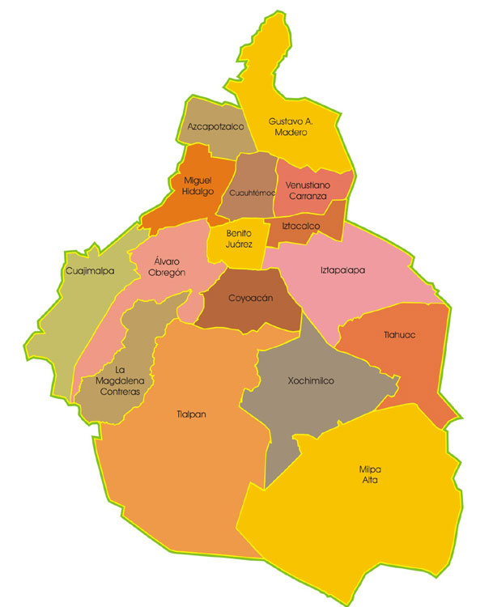
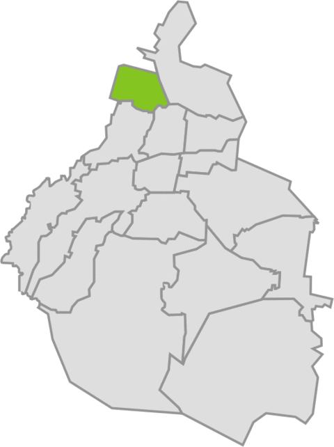
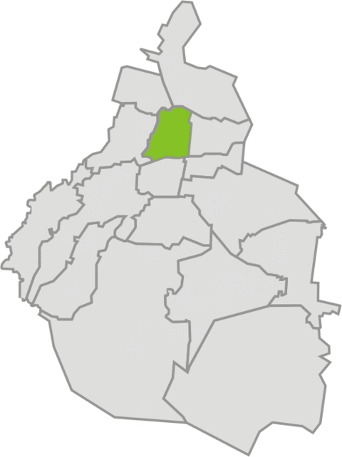
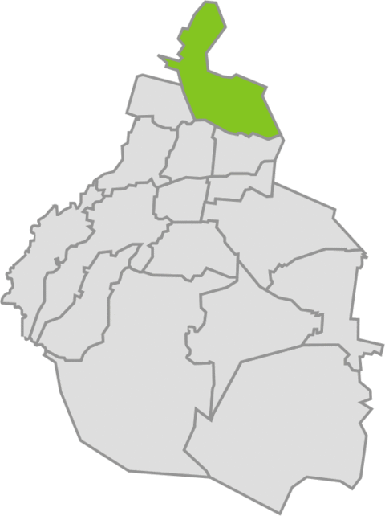

"Delegaciones la Ciudad de México"
En la tabla se describen algunos detalles de 4 Delegaciones
Localización
Delegación
Características
Logotipo

AZCAPOTZALCO
Superficie: 33.66 km
2
Población: 425 298 Hab.
Gentilicio:Chintololo

CUAUHTEMOC
Superficie: 32.40
2
Población: 521 348 Hab.
Gantilicio:

GUSTAVO A. MADERO
Superficie: 94.07 km
2
Población 1 193 161 Hab.
Gentilicio: Maderense
XOCHIMILCO
Superficie: 118 Km
2
Población: 404 458 Hab.
Gentilicio: Xochimilquense